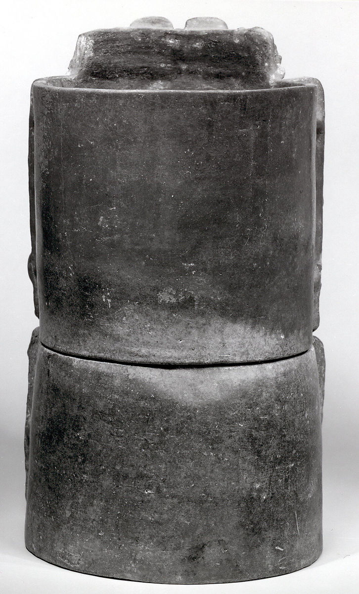
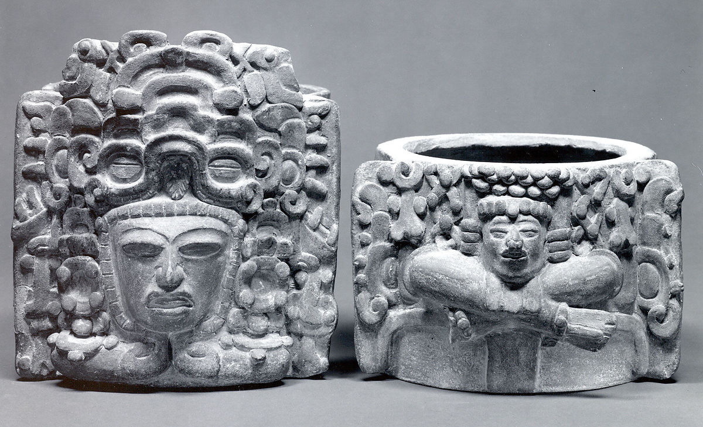

-

- 
- 
Seated Figure Censer (Incensario)
5th–6th century
Censers, or incensarios, have been discovered in a wide range of contexts, from the steps of temples to cave interiors, indicative of the importance of burning rituals in ancient Mesoamerica. It is thought that billowing clouds of smoke, produced by the burning of copal incense, accompanied every major ceremony in the Maya realm. Depicted on the censer illustrated here is a seated figure, perhaps a ruler, surrounded by aspects of mythological creatures that are stacked about his head and symmetrically flank his sides. The central figure is in higher relief, sitting cross-legged with arms carefully positioned in front of his chest. The position of the hands, held inward and touching, is known from sculpted stone monuments, where it carries connotations of rulership. A human head or masklike element is depicted in the figure's lap. The figure may represent a generalized concept of revered ancestor.